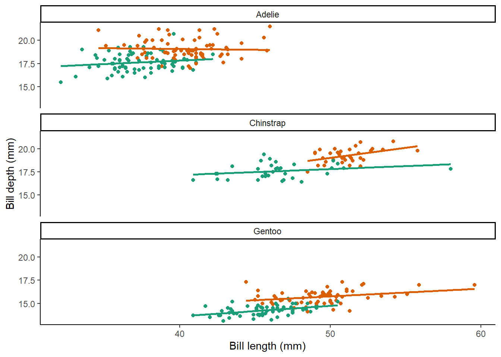

Chapter 11 Deeper data insights part 2: Week Eleven
In the previous chapter we looked at individual variables, and understanding the different types of data. We made numeric and graphical summaries of the distributions of features within each variable. This week we will continue to work in the same space, and extend our understanding to include relationships between variables.
Understanding the relationship between two or more variables is often the basis of most of our scientific questions. These might include comparing variables of the same type (numeric against numeric) or different types (numeric against categorical). In this chapter we will see how we can use descriptive statistics and visuals to explore associations
11.1 Associations between numerical variables
11.1.1 Correlations
A common measure of association between two numerical variables is the correlation coefficient. The correlation metric is a numerical measure of the strength of an association
There are several measures of correlation including:
Pearson’s correlation coefficient : good for describing linear associations
Spearman’s rank correlation coefficient: a rank ordered correlation - good for when the assumptions for Pearson’s correlation is not met.
Pearson’s correlation coefficient r is designed to measure the strength of a linear (straight line) association. Pearson’s takes a value between -1 and 1.
A value of 0 means there is no linear association between the variables
A value of 1 means there is a perfect positive association between the variables
A value of -1 means there is a perfect negative association between the variables
A perfect association is one where we can predict the value of one variable with complete accuracy, just by knowing the value of the other variable.
We can use the cor function in R to calculate Pearson’s correlation coefficient.
library(rstatix)
penguins %>%
cor_test(bill_length_mm, bill_depth_mm)## # A tibble: 1 x 8
## var1 var2 cor statistic p conf.low conf.high method
## <chr> <chr> <dbl> <dbl> <dbl> <dbl> <dbl> <chr>
## 1 bill_length_mm bill_depth_mm -0.24 -4.46 1.12e-5 -0.333 -0.132 Pears~This tells us two features of the association. It’s sign and magnitude. The coefficient is negative, so as bill length increases, bill depth decreases. The value -0.22 indicates that only about 22% of the variation in bill length can be explained by changes in bill depth (and vice-versa), suggesting that the variables are not closely related.

Figure 11.1: Different relationships between two numeric variables. Each number represents the Pearson’s correlation coefficient of each association
Because Pearson’s coefficient is designed to summarise the strength of a linear relationship, this can be misleading if the relationship is not linear e.g. curved or humped. This is why it’s always a good idea to plot the relationship first (see above).
Even when the relationship is linear, it doesn’t tell us anything about the steepness of the association (see above). It only tells us how often a change in one variable can predict the change in the other not the value of that change.
This can be difficult to understand at first, so carefully consider the figure above.
The first row above shows differing levels of the strength of association. If we drew a perfect straight line between two variables, how closely do the data points fit around this line.
The second row shows a series of perfect linear relationships. We can accurately predict the value of one variable just by knowing the value of the other variable, but the steepness of the relationship in each example is very different. This is important because it means a perfect association can still have a small effect.
The third row shows a series of associations where there is clearly a relationship between the two variables, but it is also not linear so would be inappropriate for a Pearson’s correlation.
11.1.2 Non-linear correlations
So what should we do if the relationship between our variables is non-linear? Instead of using Pearson’s correlation coefficient we can calculate something called a rank correlation.
Instead of working with the raw values of our two variables we can use rank ordering instead. The idea is pretty simple if we start with the lowest vaule in a variable and order it as ‘1,’ then assign labels ‘2,’ ‘3’ etc. as we ascend in rank order. We can see a way that this could be applied manually with the function dense_rank from dplyr below:
penguins %>% select(bill_length_mm,
bill_depth_mm) %>%
drop_na() %>%
mutate(rank_length=dense_rank((bill_length_mm)),
rank_depth=dense_rank((bill_depth_mm)))## # A tibble: 342 x 4
## bill_length_mm bill_depth_mm rank_length rank_depth
## <dbl> <dbl> <int> <int>
## 1 39.1 18.7 43 57
## 2 39.5 17.4 46 44
## 3 40.3 18 52 50
## 4 36.7 19.3 23 63
## 5 39.3 20.6 45 75
## 6 38.9 17.8 41 48
## 7 39.2 19.6 44 66
## 8 34.1 18.1 5 51
## 9 42 20.2 66 72
## 10 37.8 17.1 32 41
## # ... with 332 more rowsMeasures of rank correlation then are just a comparison of the rank orders between two variables, with a value between -1 and 1 just like Pearsons’s. We already know from our Pearson’s correlation coefficient, that we expect this relationship to be negative. So it should come as no surprise that the highest rank order values for bill_length_mm appear to be associated with lower rank order values for bill_depth_mm.
To calculate Spearman’s \(\rho\) ‘rho’ is pretty easy, you can use the cor functions again, but this time specify a hidden argument to method="spearman".
penguins %>%
cor_test(bill_length_mm, bill_depth_mm, method="spearman")## # A tibble: 1 x 6
## var1 var2 cor statistic p method
## <chr> <chr> <dbl> <dbl> <dbl> <chr>
## 1 bill_length_mm bill_depth_mm -0.22 8145268. 0.0000351 SpearmanWhat we can see in this example is that Pearson’s r and Spearman’s \(\rho\) are basically identical.
11.1.3 Graphical summaries between numeric variables
Correlation coefficients are a quick and simple way to attach a metric to the level of association between two variables. They are limited however in that a single number can never capture the every aspect of their relationship. This is why we visualise our data.
We have already covered scatter plots and ggplot2() extensively in previous chapters, so here we will just cover some of the different ways in which you could present the nature of a relationship
length_depth_scatterplot <- ggplot(penguins, aes(x= bill_length_mm,
y= bill_depth_mm)) +
geom_point()
length_depth_scatterplot
Figure 11.2: A scatter plot of bill depth against bill length in mm
**Note - Remember there are a number of different options available when constructing a plot including changing alpha to produce transparency if plots are lying on top of each other, colours (and shapes) to separate subgroups and ways to present third numerical variables such as setting aes(size=body_mass_g).
library(patchwork) # package calls should be placed at the TOP of your script
bill_depth_marginal <- penguins %>%
ggplot()+
geom_density(aes(x=bill_depth_mm), fill="darkgrey")+
theme_void()+
coord_flip() # this graph needs to be rotated
bill_length_marginal <- penguins %>%
ggplot()+
geom_density(aes(x=bill_length_mm), fill="darkgrey")+
theme_void()
layout <- "
AA#
BBC
BBC"
# layout is easiest to organise using a text distribution, where ABC equal the three plots in order, and the grid is how much space they take up. We could easily make the main plot bigger and marginals smaller with
# layout <- "
# AAA#
# BBBC
# BBBC"
# BBBC
bill_length_marginal+length_depth_scatterplot+bill_depth_marginal+ # order of plots is important
plot_layout(design=layout) # uses the layout argument defined above to arrange the size and position of plots
Figure 11.3: Using patchwork we can easily arrange extra plots to fit as marginals - these could be boxplots, histograms or density plots
These efforts allow us to capture details about the spread and distribution of both variables and how they relate to each other. This figure provides us with insights into
The central tendency of each variable
The spread of data in each variable
The correlation between the two variables
11.2 Associations between categorical variables
Exploring associations between different categorical variables is not quite as simple as the previous numeric-numeric examples. Generally speaking we are interested in whether different combinations of categories are uniformally distributed or show evidence of clustering leading to over- or under-represented combinations.
The simplest way to investigate this is to use group_by and summarise as we have used previously.
island_species_summary <- penguins %>%
group_by(island, species) %>%
summarise(n=n(),
n_distinct=n_distinct(penguin_id)) %>%
ungroup() %>% # needed to remove group calculations
mutate(freq=n/sum(n)) # then calculates percentage of each group across WHOLE dataset
island_species_summary## # A tibble: 5 x 5
## island species n n_distinct freq
## <chr> <chr> <int> <int> <dbl>
## 1 Biscoe Adelie 44 44 0.128
## 2 Biscoe Gentoo 124 94 0.360
## 3 Dream Adelie 56 56 0.163
## 4 Dream Chinstrap 68 58 0.198
## 5 Torgersen Adelie 52 52 0.151**Note - remember that group_by() applies functions which comes after it in a group-specific pattern.
What does the above tell us, that 168 observations were made on the Island of Biscoe, with three times as many Gentoo penguin observations made as Adelie penguins (remeber this is observations made, not individual penguins). When we account for penguin ID we see there are around twice as many Gentoo penguins recorded. We can see there are no Chinstrap penguins recorded on Biscoe. Conversely we can see that Gentoo penguins are only observed on Biscoe. The island of Dream has two populations of Adelie and Chinstrap penguins of roughly equal size, while the island of Torgensen appears to have a population comprised only of Adelie penguins.
We could also use a bar chart in ggplot to represent this count data.
penguins%>%
ggplot(aes(x=island, fill=species))+
geom_bar(position=position_dodge())+
coord_flip()
This is fine, but it looks a bit odd, because the bars expand to fill the available space on the category axis. Luckily there is an advanced version of the postion_dodge argument.
penguins%>%
ggplot(aes(x=island, fill=species))+
geom_bar(position=position_dodge2(preserve="single"))+
#keeps bars to appropriate widths
coord_flip() > **Note the default for bar charts would have been a stacked option, but we have already seen how that can produce graphs that are difficult to read.
> **Note the default for bar charts would have been a stacked option, but we have already seen how that can produce graphs that are difficult to read.
An alternative approach would be to look at the ‘relative proportions’ of each population in our overall dataset. Using the same methods as we used previously when looking at single variables. Let’s add in a few aesthetic tweaks to improve the look.
penguins %>%
ggplot(aes(x=island, fill=species))+
geom_bar(position=position_dodge2(preserve="single"))+
#keeps bars to appropriate widths
labs(x="Island",
y = "Number of observations")+
geom_text(data=island_species_summary, # use the data from the summarise object
aes(x=island,
y= n+10, # offset text to be slightly to the right of bar
group=species, # need species group to separate text
label=scales::percent(freq) # automatically add %
),
position=position_dodge2(width=0.8))+ # set width of dodge
scale_fill_manual(values=c("cyan",
"darkorange",
"purple"
))+
coord_flip()+
theme_minimal()+
theme(legend.position="bottom") # put legend at the bottom of the graphFigure 11.4: A dodged barplot showing the numbers and relative proportions of data observations recorded by penguin species and location
11.3 Associations between Categorical-numerical variables
penguins %>%
ggplot(aes(x=species,
y=body_mass_g))+
geom_boxplot()+
labs(y="Body mass (g)",
x= "Species")
penguins %>%
ggplot(aes(x=body_mass_g,
fill=species))+
geom_histogram(alpha=0.6,
bins=30,
position="identity")+
facet_wrap(~species,
ncol=1)
11.4 Complexity
11.4.1 Simpson’s Paradox
Remember when we first correlated bill length and bill depth against each other we found an overall negative correlation of -0.22. However, this is because of a confounding variable we had not accounted for - species.

This is another example of why carefully studying your data - and carefully considering those variables which are likely to affect each other are studied or controlled for. It is an entirely reasonable hypothesis that different penguin species might have different bill shapes that might make an overall trend misleading. We can easily check the effect of a categoricial variable on our two numeric variables by assigning the aesthetic colour.
colours <- c("cyan",
"darkorange",
"purple")
length_depth_scatterplot_2 <- ggplot(penguins, aes(x= bill_length_mm,
y= bill_depth_mm,
colour=species)) +
geom_point()+
geom_smooth(method="lm",
se=FALSE)+
scale_colour_manual(values=colours)+
theme_classic()+
theme(legend.position="none")+
labs(x="Bill length (mm)",
y="Bill depth (mm)")
length_depth_scatterplot
bill_depth_marginal_2 <- penguins %>%
ggplot()+
geom_density(aes(x=bill_depth_mm,
fill=species),
alpha=0.5)+
scale_fill_manual(values=colours)+
theme_void()+
coord_flip() # this graph needs to be rotated
bill_length_marginal_2 <- penguins %>%
ggplot()+
geom_density(aes(x=bill_length_mm,
fill=species),
alpha=0.5)+
scale_fill_manual(values=colours)+
theme_void()+
theme(legend.position="none")
layout2 <- "
AAA#
BBBC
BBBC
BBBC"
bill_length_marginal_2+length_depth_scatterplot_2+bill_depth_marginal_2+ # order of plots is important
plot_layout(design=layout2) # uses the layout argument defined above to arrange the size and position of plots
We now clearly see a striking reversal of our previous trend, that in fact within each species of penguin there is an overall positive association between bill length and depth.
This should prompt us to re-evaluate our correlation metrics:
penguins %>%
group_by(species) %>%
cor_test(bill_length_mm, bill_depth_mm)## # A tibble: 3 x 9
## species var1 var2 cor statistic p conf.low conf.high method
## <chr> <chr> <chr> <dbl> <dbl> <dbl> <dbl> <dbl> <chr>
## 1 Adelie bill_le~ bill_de~ 0.39 5.19 6.67e- 7 0.247 0.519 Pears~
## 2 Chinstrap bill_le~ bill_de~ 0.65 7.01 1.53e- 9 0.492 0.772 Pears~
## 3 Gentoo bill_le~ bill_de~ 0.64 9.24 1.02e-15 0.526 0.737 Pears~We now see that the correlation values for all three species is >0.22 - indicating these associations are much closer than previously estimated.
11.4.2 Three or more variables
In the above example therefore, we saw the importance of exploring relationships among more than two variables at once. Broadly speaking there are two ways top do this
Layer an extra aesthetic mapping onto ggplot - such as size, colour, or shape
Use facets to construct multipanel plots according to the values of a categorical variable
If we want we can also adopt both of these approaches at the same time:
penguins %>%
drop_na(sex) %>%
ggplot(aes(x= bill_length_mm,
y= bill_depth_mm,
colour=sex)) + # colour aesthetic set to sex
geom_point()+
geom_smooth(method="lm",
se=FALSE)+
scale_colour_manual(values=c("#1B9E77", "#D95F02"))+ # pick two colour scheme
theme_classic()+
theme(legend.position="none")+
labs(x="Bill length (mm)",
y="Bill depth (mm)")+
facet_wrap(~species, ncol=1) # specify plots are stacked split by species
Here we can see that the trends are the same across the different penguin sexes. Although by comparing the slopes of the lines, lengths of the lines and amounts of overlap we can make insights into how “sexually dimorphic” these different species are e.g. in terms of beak morphology do some species show greater differences between males and females than others?
11.5 Summing up
This is our last data handling workshop. We have built up towards being able to discover and examine relationships and differences among variables in our data. You now have the skills to handle many different types of data, tidy it, and produce visuals to generate insight and communicate this to others.
A note of caution is required - it is very easy to spot and identify patterns.
When you do spot a trend, difference or relationship, it is important to recognise that you may not have enough evidence to assign a reason behind this observation. As scientists it is important to develope hypotheses based on knowledge and understanding, this can help (sometimes) with avoiding spurious associations.
Sometimes we may see a pattern in our data, but it has likely occurred due to random chance, rather than as a result of an underlying process. This is where formal statistical analysis, to quantitatively assess the evidence, assess probability and study effect sizes can be incredibly powerful. We will delve into these exciting topics next term.
That’s it! Thank you for taking the time to get this far. Be kind to yourself if you found it difficult. You have done incredibly well.
Have some more praise!!!!
praise::praise()[1] "You are spectaculaR!"